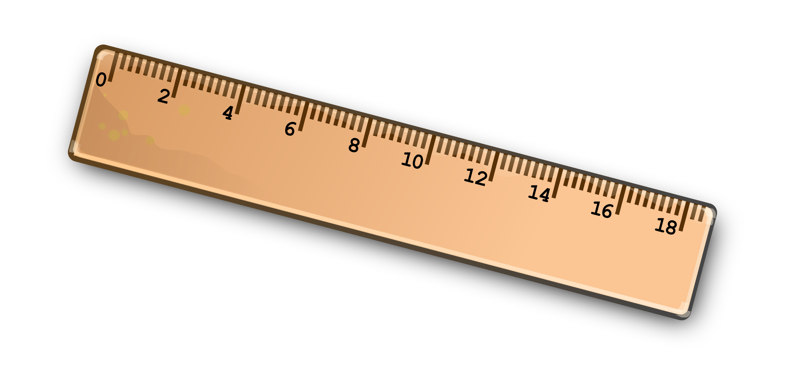
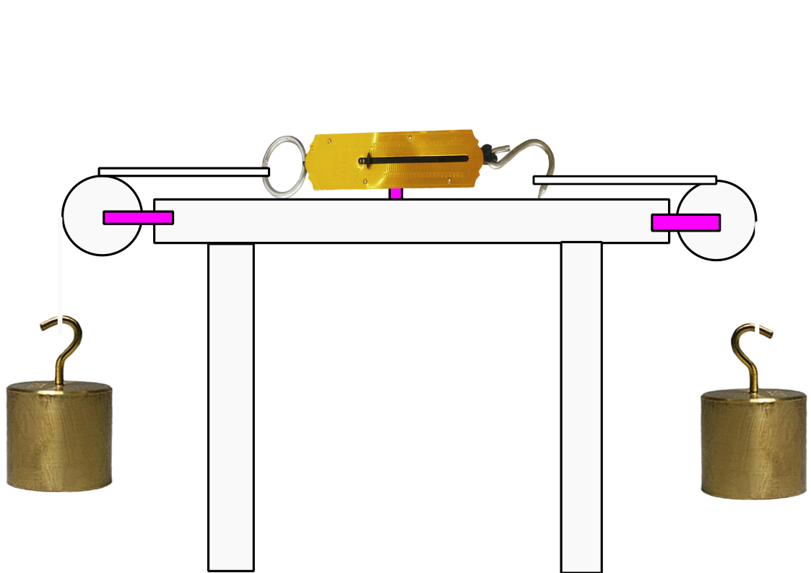

Laws of motion
Sir Isaac Newton
English physicist, mathematician and astronomer
(1642 – 1726)
He also made contributions in:
- Mathematics
- Calculus
His two most famous books:
- Optiks
- Philosophiæ Naturales
Principia Mathematica
His two most famous books:
- Optiks
- Philosophiæ Naturales
Principia Mathematica - Laws of motion
- Gravity
AXIOMATA, SIVE LEGES MOTUS
- Lex I
Corpus omne perseverare in statu suo quiescendi vel movendi uniformiter in directum, nisi quatenus illud a viribus impressis cogitur statum suum mutare.
- Lex II
- Lex III
Mutationem motus proportionalem esse vi motrici impressæ, & fieri secundum lineam rectam qua vis illa imprimitur.
Corpus omne perseverare in statu suo quiescendi vel movendi uniformiter in directum, nisi quatenus illud a viribus impressis cogitur statum suum mutare.
AXIOMATA, SIVE LEGES MOTUS
- Lex I
Corpus omne perseverare in statu suo quiescendi vel movendi uniformiter in directum, nisi quatenus illud a viribus impressis cogitur statum suum mutare.
AXIOMAS, O LEYES DEL MOVIMIENTO
- Ley I (first law)
Todo cuerpo continúa en su estado de reposo o movimiento uniforme en línea recta, a menos que hayan fuerzas que lo hagan cambiar.
Inercia (Inertia)
- Ley I (first law)
Todo cuerpo continúa en su estado de reposo o movimiento uniforme en línea recta, a menos que hayan fuerzas que lo hagan cambiar.
Experiment

Experimento 2


- Lex II
Mutationem motus proportionalem esse vi motrici impressæ, & fieri secundum lineam rectam qua vis illa imprimitur.
- Ley II (second law)
El cambio de movimiento es directamente proporcional a la fuerza impresa y ocurre a lo largo de la línea recta de la cual aquella fuerza se imprime.
- Ley II (second law)
El cambio de movimiento es directamente proporcional a la fuerza impresa y ocurre a lo largo de la línea recta de la cual aquella fuerza se imprime.
\[f=ma\]
\[f=ma\]
\[a\propto \frac{1}{m}\]
\[f={\Large m}{\small a}\]
\[f={\small m}{\Large a}\]
For example,
a pendulum
Teamwork activity
1000 g
2000 g
¿Cuánto medirá la balanza?
- Lex III
Corpus omne perseverare in statu suo quiescendi vel movendi uniformiter in directum, nisi quatenus illud a viribus impressis cogitur statum suum mutare.
- Ley III
Con toda acción ocurre siempre una reacción igual y contraria: las acciones mutuas de dos cuerpos siempre son iguales y dirigidas en sentido opuesto.
Conservación de momento
- Ley III
Con toda acción ocurre siempre una reacción igual y contraria: las acciones mutuas de dos cuerpos siempre son iguales y dirigidas en sentido opuesto.
Momento
\[p=mv\]
Conservación de momento
\[p_i=p_f\]
Momento
\[p=mv\]
Conservación de momento
\[mv_i=mv_f\]